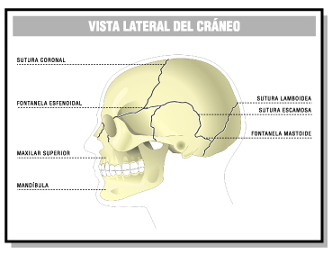

¿Por qué es importante el perímetro cefálico o craneal? El perímetro cefálico es un parámetro que nos proporciona información sobre el índice de maduración neurológica central. Su medición es muy importante desde el nacimiento hasta los 3-5 meses de edad. Si se presentan anomalías deben realizarse hasta los 4-5 años.
Para saber si el crecimiento craneal está dentro de la normalidad lo comparamos con tablas estandarizadas.
|
EDAD |
NIÑOS |
NIÑAS |
|
Nacimiento |
35 cm |
34.5 cm |
|
3 meses |
40 cm |
39.5 cm |
|
1 año |
47 cm |
46 cm |
|
3 años |
50 cm |
49 cm |
|
6 años |
51.5 cm |
50 cm |
|
Tabla Incremento del perímetro craneal hasta los 6 años de edad |
||
El crecimiento del cráneo se realiza gracias a la existencia de suturas (son una especie de depresiones lineales entre los huesos que lo conforman), pues están rellenas de tejido conjuntivo elástico. También gracias a las fontanelas, que son unas porciones de tejido conjuntivo blando de forma triangular y romboidea que se encuentran en los puntos donde contactan tres o más huesos craneales
|  |
| Sirius. Estándar. Elaboración propia. |
¿Qué es el perímetro torácico?
El perímetro torácico indica la capacidad torácica. El tórax del recién nacido suele ser redondeado Este perímetro, al nacer, es menor que el perímetro craneal, aunque va creciendo progresivamente hasta sobrepasar al craneal hacia los tres años.
|
EDAD |
NIÑOS |
NIÑAS |
|
Nacimiento |
32,5 cm |
32 cm |
|
3 meses |
40,5 cm |
39,5 cm |
|
1 año |
47,5 cm |
47 cm |
|
3 años |
52 cm |
51 cm |
|
6 años |
57 cm |
56 cm |
|
Tabla. Incremento del perímetro torácico hasta los 6 años de edad. |
||